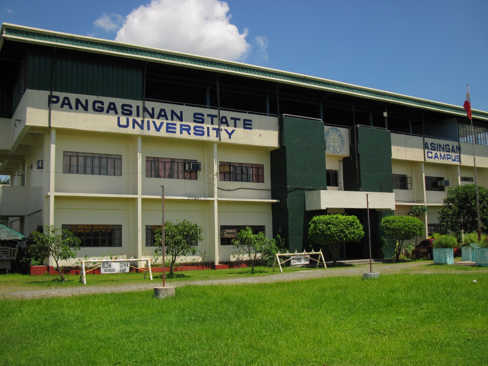

|  |
HistoryThe advancement of education in Pangasinan, particularly in the establishment and growth of colleges and universities, has been remarkable. Among these institutions, Pangasinan State University (PSU) ‐ Asingan Campus stands out as a progressive college. Its roots trace back to 1962 when it began as the Binalonan High School Annex, located within the premises of the former Pacifican Institute of Asingan. The campus emerged as Asingan High School in 1963 following the acquisition of its own site, generously donated by the Concha Miguel family, through the enactment of R.A. No. 3995 in 1967, sponsored by Representative Luciano Millan. Subsequently, it evolved into Asingan School of Arts and Trades (ASAT) under the Bureau of Vocational Education, expanding its offerings to include post-secondary courses such as Associate in Industrial Technology and college degree programs like Bachelor in Industrial Technology (BIT) and Bachelor of Science in Industrial Education (BSIE). |
Articles
|
 |